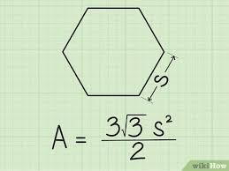

การหาพื่นที่หกเหลี่ยม
สูตร:
A=3√3 /2 × ด้าน^2
ตัวอย่าง:
หากด้านของหกเหลี่ยม = 6 เซนติเมตร:A= 3√3 /2 × 62 ≈ 93.5 cm2
ขั้นตอนการคำนวณ:
1.ยกกำลังด้าน: 62=366^2 = 3662=36
2.คูณด้วยค่า √ 3: √ 3 ≈ 1.732
3.คูณด้วย 3: 3×1.732
4.หารด้วย 2: 3×1.7322
5.คูณผลลัพธ์กับ 36: 3×1.7322 ×36
6.ผลลัพธ์: ประมาณ 93.5 ตารางเซนติเมตร
